Crise do Antigo Regime e convocação dos Estados Gerais
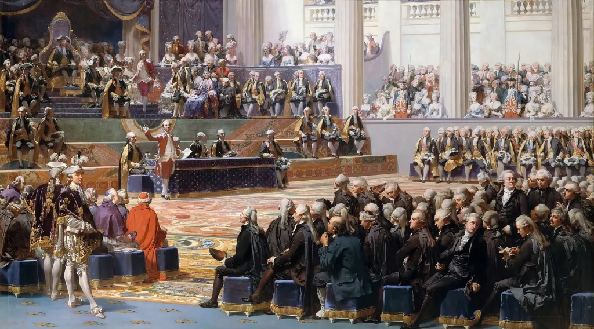
A Revolução Francesa não surgiu de um único acontecimento isolado. Antes da
Queda da Bastilha, a França já vivia um período de crise profunda, em que
problemas econômicos, desigualdades sociais e disputas políticas se acumulavam
de forma cada vez mais tensa. No final do século XVIII, o reino francês ainda
era organizado segundo a estrutura do Antigo Regime, marcada pela divisão da
sociedade em três estados. O clero e a nobreza concentravam privilégios e
influência política, enquanto o Terceiro Estado, que reunia a burguesia, os
trabalhadores urbanos e os camponeses, carregava o peso dos impostos e das
dificuldades materiais.
Essa estrutura social se tornava cada vez mais insustentável. A monarquia
enfrentava uma grave crise financeira, resultado de anos de gastos elevados,
administração ineficiente e endividamento. Ao mesmo tempo, a população
sofria com más colheitas e com a alta do preço dos alimentos, principalmente
do pão, que era um item essencial para os setores mais pobres. Em muitas
regiões, a fome e a miséria se agravavam, aumentando o descontentamento popular.
Assim, a crise não era apenas do governo: era uma crise de toda a organização
social e política da França.
Enquanto isso, a burguesia havia ampliado sua importância econômica,
enriquecendo com o comércio, as finanças e outras atividades urbanas, mas
continuava sem acesso correspondente ao poder político. Isso gerava uma
contradição cada vez maior entre a força que esse grupo tinha na vida econômica
e os limites que encontrava dentro da velha ordem. Já os camponeses e as camadas
populares urbanas viviam o lado mais duro desse sistema, pressionados por tributos,
pela carestia e pela falta de participação nas decisões do reino. Aos poucos,
diferentes grupos sociais, cada um por seus próprios interesses, passaram a
enxergar o Antigo Regime como um obstáculo.
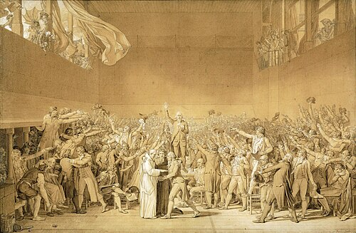
Diante do agravamento da crise, Luís XVI decidiu convocar os Estados Gerais
em 1789. Essa assembleia reunia representantes dos três estados e não era
convocada havia muito tempo. A intenção do rei era buscar uma saída para a
falência do Estado, especialmente no campo dos impostos. No entanto, ao abrir
espaço para a reunião dos representantes do reino, a monarquia acabou trazendo
à tona tensões que já não podiam mais ser contidas com facilidade. O problema
deixou de ser apenas financeiro e começou a se transformar em uma disputa
mais ampla sobre poder e representação.
O principal ponto de conflito estava na forma de votação. Tradicionalmente,
cada estado votava separadamente, o que favorecia o clero e a nobreza, que
podiam se unir contra o Terceiro Estado. Mas, em 1789, esse modelo passou a
ser fortemente questionado. O Terceiro Estado exigia voto por cabeça, e não
por ordem, pois isso refletiria melhor o peso da maioria da população. Essa
discussão revelou que o impasse não estava apenas em arrecadar mais dinheiro,
mas em decidir quem tinha legitimidade para falar em nome da França.
Quando as tensões aumentaram e a monarquia não ofereceu uma solução real,
os representantes do Terceiro Estado deram um passo decisivo: passaram a se
reconhecer como representantes da nação e formaram a Assembleia Nacional.
Pouco depois, no Juramento do Jogo da Péla, afirmaram que não se dispersariam
até que a França tivesse uma constituição. Esse momento foi fundamental,
porque mostrou que a crise já havia ultrapassado os limites de uma simples
reforma administrativa. A autoridade do rei começava a ser desafiada
abertamente, e a velha ordem perdia sua estabilidade.
Mesmo assim, nada ainda estava decidido. O clima era de incerteza e tensão.
De um lado, cresciam as expectativas de mudança; de outro, aumentava o medo
de que a monarquia reagisse pela força para recuperar o controle da situação.
Foi nesse ambiente de crise social, disputa política e desconfiança crescente
que a França entrou nos meses mais explosivos de 1789. A Queda da Bastilha,
que viria em seguida, não foi o início absoluto da revolução, mas o momento
em que todas essas tensões acumuladas finalmente irromperam de forma aberta
e popular.
Queda da Bastilha: da crise política à revolta popular
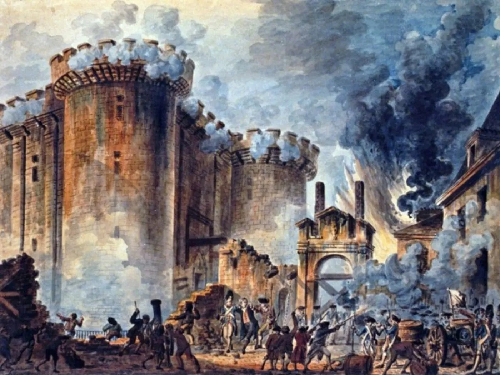
A crise que atingia a França em 1789 não ficou restrita às reuniões políticas
e aos debates entre representantes. Depois da convocação dos Estados Gerais
e da formação da Assembleia Nacional, o confronto entre a velha ordem e as
forças que queriam transformá-la entrou em uma fase mais tensa. O rei e os
grupos privilegiados ainda resistiam a aceitar mudanças profundas, enquanto
o Terceiro Estado buscava se afirmar como representante da nação. Nesse
momento, a revolução ainda não havia explodido completamente nas ruas, mas
o equilíbrio do Antigo Regime já estava abalado, e a desconfiança crescia
a cada dia.
Em Paris, a população acompanhava com atenção os acontecimentos de Versalhes.
A crise econômica seguia pesada, o preço do pão continuava alto e a fome
atingia os setores mais pobres da cidade. Ao mesmo tempo, circulavam rumores
de que o rei poderia dissolver à força a Assembleia e reprimir os grupos que
exigiam reformas. A presença de tropas nas proximidades da capital aumentou
ainda mais o medo popular. Para muitos, isso parecia o sinal de que a
monarquia preparava um golpe contra o processo político que começava a
escapar de seu controle.
A situação se agravou ainda mais quando Jacques Necker, ministro das finanças
visto como favorável a reformas, foi demitido por Luís XVI em julho de 1789.
A notícia causou forte reação em Paris. Muitos interpretaram a demissão como
um passo decisivo para o fechamento político e para a repressão contra a
população e contra os representantes do Terceiro Estado. O clima, que já era
de tensão, transformou-se em alarme. A partir daí, a revolta deixou de ser
apenas indignação difusa e começou a tomar a forma de mobilização concreta.
Nas ruas, a população passou a buscar armas para se defender. Não se tratava
apenas de atacar por atacar, mas de se preparar diante da possibilidade de
uma intervenção armada do rei. A multidão tomou depósitos de armas, saqueou
arsenais e procurou pólvora. Nesse contexto, a Bastilha se tornou um alvo
central. Embora naquele momento já não fosse uma fortaleza decisiva do ponto
de vista militar, ela guardava munição e, acima de tudo, possuía enorme
força simbólica. Era vista como um dos maiores emblemas do poder arbitrário
da monarquia, da prisão sem julgamento e da autoridade exercida de forma
violenta contra o povo.
Em 14 de julho de 1789, a população de Paris cercou a Bastilha e exigiu a
entrega de armas e pólvora. As negociações fracassaram, a tensão aumentou
e o confronto começou. Depois de horas de luta, a fortaleza foi tomada. A
queda da Bastilha teve importância muito maior do que o número de
prisioneiros que estavam ali ou do que seu valor estratégico imediato. O
que caiu naquele dia não foi apenas uma prisão, mas um símbolo da ordem
absolutista. A partir daquele momento, ficou evidente que a crise política
havia se transformado em revolução aberta, com participação decisiva das
massas urbanas.
A tomada da Bastilha mostrou que o povo não estava apenas assistindo aos
acontecimentos: ele passava a intervir diretamente no rumo da história. O
rei foi forçado a reconhecer que já não podia governar como antes, e a
revolução ganhou novo impulso em toda a França. A fortaleza derrubada
tornou-se o sinal visível de que a velha ordem começava a ruir. Assim, a
Queda da Bastilha entrou para a história como o momento em que a crise do
Antigo Regime deixou de ser apenas um impasse político e se converteu em
ação popular capaz de empurrar a revolução adiante.
Declaração dos Direitos do Homem e do Cidadão: a nova ordem da revolução
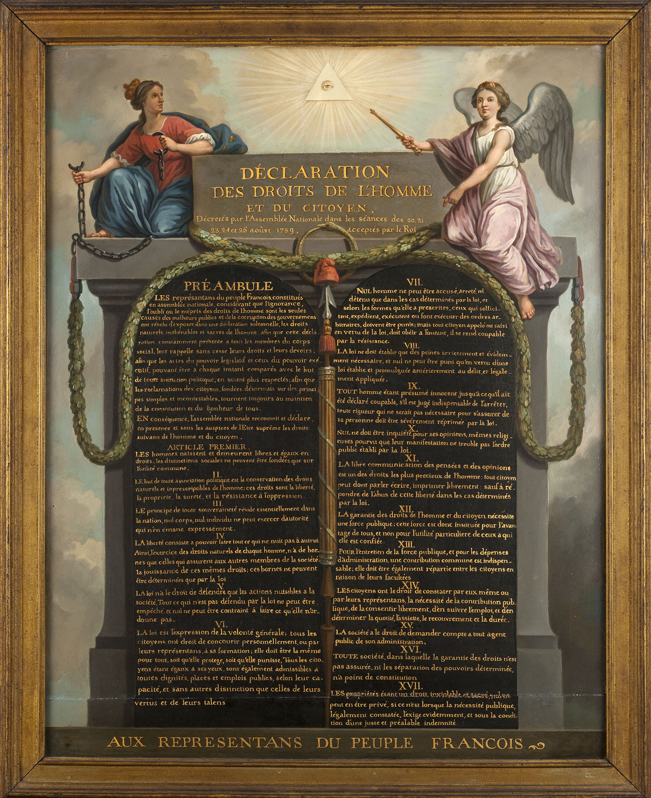
Depois da Queda da Bastilha, a Revolução Francesa entrou em uma fase decisiva.
A destruição de um símbolo do poder absolutista mostrava que o Antigo Regime
havia começado a ruir de forma aberta, mas ainda restava uma questão central:
o que seria colocado em seu lugar? Derrubar a velha ordem era apenas uma parte
do processo. A outra era construir uma nova forma de organizar a sociedade, o
poder político e os direitos. Foi nesse contexto que, em agosto de 1789, a
Assembleia Nacional aprovou a Declaração dos Direitos do Homem e do Cidadão,
um dos documentos mais importantes da revolução e da história política moderna.
A declaração surgiu num momento em que a França tentava transformar a revolta em
princípio, a insurreição em lei e a crise do Antigo Regime em nova estrutura
política. Seu texto afirmava que os homens nascem e permanecem livres e iguais em
direitos, defendia a liberdade, a segurança, a resistência à opressão e a soberania
da nação, atacando diretamente os fundamentos do absolutismo. Em vez de um poder
concentrado no rei por direito divino, passava-se a defender a ideia de que a
autoridade política deveria se apoiar na nação. Em vez de uma sociedade organizada
por privilégios de nascimento, proclamava-se a igualdade jurídica. Em aparência,
tratava-se de uma ruptura profunda e de alcance universal.
E, de fato, havia ali uma ruptura histórica real. A declaração ajudava a desmontar
juridicamente a velha sociedade feudal, enfraquecendo os privilégios do clero e da
nobreza e criando as bases de uma nova ordem política. No entanto, essa nova ordem
não era neutra, nem representava uma igualdade plena para todos. Ela expressava os
interesses e os limites do grupo social que mais crescia em força naquele momento:
a burguesia. O direito à liberdade era defendido, mas sempre ao lado da propriedade,
que aparecia como um dos pilares centrais da nova sociedade. A igualdade era afirmada
perante a lei, mas isso não significava o fim das desigualdades reais da vida social.
Ou seja, a revolução destruía privilégios feudais, mas não aboliria a divisão de classes;
reorganizava o poder, mas sem entregar esse poder de forma efetiva ao conjunto do povo.

Foi justamente nesse processo de construção da nova ordem que também começaram a se tornar
mais visíveis as divisões internas da própria revolução. Na assembleia, os grupos que
defendiam mudanças mais limitadas, mais preocupados em preservar a propriedade, a hierarquia
social e os freios contra o avanço popular, costumavam se sentar à direita do presidente. Já
aqueles que pressionavam por transformações mais profundas e por maior ruptura com a velha
estrutura se colocavam à esquerda. Foi daí que nasceram, historicamente, os termos esquerda e
direita na política moderna. Essa divisão não era uma simples questão de lugar físico dentro
da assembleia. Ela expressava conflitos reais entre interesses sociais distintos. De um lado,
setores dispostos a mudar o suficiente para destruir a velha aristocracia, mas não a ponto de
permitir que o povo extrapolasse os limites convenientes à nova ordem. Do outro, correntes mais
abertas à ampliação da revolução e à pressão popular. Assim, a própria linguagem política moderna
nascia no interior dessa disputa sobre até onde a revolução deveria ir.
Isso ajuda a entender por que a Declaração dos Direitos do Homem e do Cidadão foi, ao mesmo tempo,
tão avançada e tão limitada. Avançada porque rompeu com a lógica dos privilégios de nascimento e
ajudou a fundar uma nova ideia de cidadania política. Limitada porque falava em universalidade
enquanto excluía, na prática, grande parte da sociedade. As mulheres não foram reconhecidas como
sujeitas políticas plenas, apesar de sua participação ativa nos acontecimentos revolucionários. Os
setores mais pobres também continuaram afastados de uma igualdade concreta, já que a liberdade
jurídica não eliminava a desigualdade material. A própria escolha da palavra “homem” carregava
esse problema: apresentava-se como universal, mas não incluía de fato todos os seres humanos na
mesma medida.

Essa contradição ficou tão evidente que logo surgiram respostas críticas dentro da própria época. Um
dos exemplos mais marcantes foi o de Olympe de Gouges, que escreveu a Declaração dos Direitos da
Mulher e da Cidadã, denunciando a exclusão feminina e mostrando que a revolução proclamava direitos
gerais enquanto mantinha barreiras profundas para metade da população. Isso revela um ponto
importante:
a declaração de 1789 não deve ser lida apenas como um texto de libertação, mas também como um
documento
que marca os limites históricos da nova ordem que estava sendo construída. Ela derrubava a velha
aristocracia, mas não fazia desaparecer todas as formas de dominação. A sociedade mudava, mas mudava
dentro de certos contornos bem definidos. Ainda assim, seu impacto foi imenso. A Declaração dos
Direitos
do Homem e do Cidadão atravessou fronteiras e séculos, tornando-se uma referência fundamental para a
política moderna. Seus princípios influenciaram constituições, movimentos liberais, debates sobre
cidadania
e, muito tempo depois, ajudaram a compor a tradição histórica que inspiraria formulações mais amplas
sobre
direitos humanos, inclusive no século XX. Ela não é a mesma coisa que a Declaração Universal dos
Direitos
Humanos de 1948, mas sem dúvida está entre os textos que ajudaram a abrir esse caminho. Seu peso
histórico
está justamente nisso: ela inaugurou uma nova linguagem política, baseada em direitos, soberania
nacional e
cidadania, ao mesmo tempo em que expôs os conflitos e exclusões que essa mesma linguagem carregava.
Por isso, a Declaração dos Direitos do Homem e do Cidadão deve ser entendida como um marco central
da
Revolução Francesa. Ela não foi apenas um texto bonito ou um manifesto idealista. Foi parte da
reorganização
concreta do poder numa sociedade em transformação. Seu valor histórico é enorme, mas sua leitura
também
exige cuidado: ela não realizou plenamente a igualdade que anunciava, nem representou todos da mesma
forma.
Ainda assim, ao atacar os privilégios do Antigo Regime e afirmar uma nova base de legitimidade
política,
ajudou a moldar o mundo contemporâneo. Em suas promessas e em seus limites, ela condensou uma das
grandes
contradições da revolução: a de proclamar direitos universais enquanto construía uma nova ordem
social que
continuava sendo atravessada por exclusões, interesses de classe e disputas sobre quem, afinal,
seria
reconhecido como sujeito pleno da história. Essas contradições ficavam ainda mais evidentes quando
se
observava a distância entre o ideal proclamado e a realidade concreta da França revolucionária. A
declaração
afirmava direitos universais, mas a nova ordem que se organizava não colocava todos no mesmo lugar
dentro
da vida política. A igualdade anunciada não significava participação efetiva igual para todos, nem
acesso
real às mesmas condições de existência. Logo nos primeiros anos da revolução, ficou claro que o novo
regime distinguia aqueles que poderiam exercer plenamente a cidadania política daqueles que, embora
formalmente parte da nação, continuariam afastados das decisões centrais do poder. A liberdade e a
igualdade
perante a lei eram apresentadas como princípios gerais, mas sua aplicação passava pelos limites da
propriedade, da renda e da posição social.
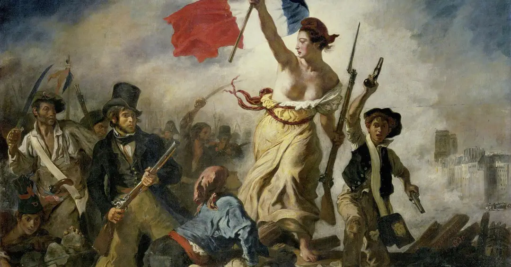
Isso aparecia, por exemplo, na separação entre cidadãos ativos e cidadãos passivos, estabelecida no
contexto da monarquia constitucional. Em teoria, todos pertenciam à nação; na prática, nem todos
podiam
participar da vida política da mesma maneira. O voto e a representação ficavam ligados a critérios
econômicos, o que revelava que a nova ordem não estava sendo construída para eliminar a desigualdade
social,
mas para reorganizá-la sob outra base. O velho privilégio aristocrático de nascimento era atacado,
mas em
seu lugar se afirmava uma sociedade em que a propriedade ganhava peso central como critério de
cidadania,
respeito e poder. A revolução desmontava a legitimidade do mundo feudal, mas a nova legitimidade que
surgia
continuava profundamente marcada pela força dos grupos proprietários. Além disso, a própria ideia de
“universalidade” carregava exclusões que a prática revolucionária não demorou a revelar. As mulheres
estavam presentes nas ruas, nos debates, nas jornadas populares e na própria sustentação material da
revolução, mas não foram reconhecidas como sujeitos políticos em igualdade de condições. A linguagem
dos
direitos falava como se representasse toda a humanidade, mas, no momento de definir quem realmente
participaria da vida pública, a exclusão feminina permanecia. O mesmo pode ser dito em relação às
colônias
e à população escravizada. Enquanto a França revolucionária proclamava liberdade e igualdade em seu
território
europeu, mantinha contradições profundas no mundo colonial, onde interesses econômicos e
proprietários
continuavam pesando fortemente. Isso mostra que os “direitos do homem” não eram um ponto de chegada
universal,
mas um campo de disputa, marcado por fronteiras muito concretas.
Ao mesmo tempo, seria um erro reduzir a Declaração dos Direitos do Homem e do Cidadão a mera fachada
ideológica sem consequência real. Seu impacto foi profundo justamente porque ela abriu uma nova
linguagem
de legitimidade política. Depois dela, já não era tão simples defender abertamente o poder absoluto
do rei,
a desigualdade jurídica entre ordens ou a autoridade fundada apenas na tradição. O vocabulário
político da
modernidade mudou. Liberdade, cidadania, nação, representação e soberania popular passaram a ocupar
o
centro do debate público. Mesmo quando esses princípios eram aplicados de forma limitada, eles
criavam um
novo terreno de conflito. Quem ficava de fora podia, a partir dali, usar essa mesma linguagem para
denunciar
a exclusão. Em outras palavras, a declaração não resolveu todas as contradições da revolução, mas
tornou
essas contradições mais visíveis e mais difíceis de esconder. Foi também nesse contexto que a
disputa entre
esquerda e direita, surgida no interior da assembleia, ganhou densidade histórica maior. A diferença
entre os
que queriam conter o alcance da revolução e os que pressionavam por mudanças mais profundas já não
dizia
respeito apenas à forma do governo, mas ao próprio sentido dos direitos proclamados. Para uns,
bastava
destruir os privilégios feudais e reorganizar a política em bases mais compatíveis com a propriedade
e com
a ascensão burguesa. Para outros, a revolução ainda precisava avançar mais, ampliando sua ruptura
com a
velha ordem e respondendo de maneira mais direta às pressões populares. Assim, a declaração não
apenas
instituiu novos princípios; ela também ajudou a revelar os limites dentro dos quais parte da nova
elite
revolucionária desejava mantê-los. A partir dali, a questão já não era só saber se a França romperia
com o
Antigo Regime, mas até onde essa ruptura iria. E foi justamente aí que começaram a se aprofundar os
conflitos
que levariam a revolução a uma fase mais radical. A nova ordem política ainda era instável, o rei
permanecia
no cenário, a crise econômica continuava pesando sobre o povo e a confiança entre monarquia e
revolução se
desgastava rapidamente. A promessa de direitos não eliminava a fome, não resolvia a carestia e não
apaziguava
a tensão entre os diferentes grupos que disputavam o rumo do processo revolucionário. A monarquia
constitucional tentava se afirmar como solução de equilíbrio, mas carregava em si uma contradição
crescente:
de um lado, proclamava-se a soberania da nação; de outro, mantinha-se o rei como peça central de um
regime
cuja autoridade já havia sido profundamente abalada. Esse desequilíbrio se tornou ainda mais visível
quando a
resistência do rei às transformações revolucionárias passou a aparecer de forma mais clara. A
permanência de
privilégios econômicos, o uso de vetos, a hesitação diante das mudanças e, depois, a tentativa de
fuga da
família real mostraram que a nova ordem não estava pacificada. O que a declaração havia tentado
fixar como
base política e jurídica continuava sendo atravessado por forças opostas: de um lado, os que queriam
encerrar
a revolução nos limites de uma monarquia constitucional apoiada na propriedade; de outro, os que
viam nesse
arranjo apenas uma solução frágil, incapaz de responder à crise e de garantir de fato os princípios
que
haviam sido proclamados. Assim, os próprios direitos anunciados em 1789 acabavam empurrando a
revolução para
diante, porque a realidade da França mostrava todos os dias que a nova ordem ainda estava longe de
se consolidar.
Desse modo, a Declaração dos Direitos do Homem e do Cidadão foi ao mesmo tempo um marco e um ponto
de tensão.
Ela deu forma política à ruptura com o Antigo Regime, mas não resolveu os conflitos sociais e
materiais que
atravessavam a França. Pelo contrário: ao proclamar direitos universais numa sociedade ainda marcada
por
desigualdade, exclusão e crise, ela expôs com mais nitidez as contradições do processo
revolucionário. A
revolução ganhava princípios, mas também ganhava novos impasses. E seriam justamente esses impasses,
aprofundados pela guerra, pela crise econômica e pela perda de confiança na monarquia, que abririam
caminho
para uma fase em que a disputa pelo poder deixaria de girar em torno da reforma da ordem e passaria
a girar em
torno da própria sobrevivência da revolução — o que levaria, pouco depois, à proclamação da
República e à
radicalização que marcaria a fase do Terror.
República e Fase do Terror: a revolução se radicaliza
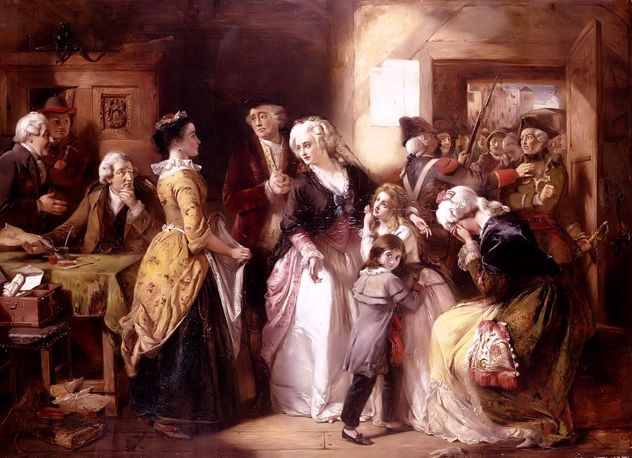
A Declaração dos Direitos do Homem e do Cidadão havia apresentado a promessa de uma
nova ordem política, baseada na liberdade, na igualdade perante a lei e no fim dos
privilégios do Antigo Regime. No entanto, a realidade da França revolucionária
continuava marcada por conflitos profundos. A crise econômica não havia desaparecido,
a população mais pobre ainda sofria com a falta de alimentos e com a alta dos preços,
e a monarquia permanecia como foco de desconfiança. Aos poucos, ficou evidente que
proclamar direitos era muito diferente de garantir estabilidade política e justiça
social em meio a uma situação de crise.
Nos anos seguintes, a tensão cresceu ainda mais. Luís XVI aceitava formalmente
algumas mudanças, mas sua posição era cada vez mais frágil, e a confiança popular
no rei se desgastava rapidamente. A tentativa de fuga da família real, em 1791,
no episódio conhecido como Fuga de Varennes, aprofundou essa crise, pois reforçou
a ideia de que o rei não estava comprometido com a revolução e poderia se aliar
aos seus inimigos. Ao mesmo tempo, a França passou a enfrentar ameaças externas.
As monarquias europeias viam com medo o avanço revolucionário e queriam impedir
que ele se espalhasse. Em 1792, a guerra contra Áustria e Prússia agravou ainda
mais a situação interna e fortaleceu o clima de medo, urgência e suspeita.
Foi nesse ambiente que a revolução entrou numa nova fase. Em agosto de 1792, a
pressão popular levou à queda definitiva da monarquia. Pouco depois, a República
foi proclamada, e a execução de Luís XVI, em janeiro de 1793, tornou o rompimento
com o passado irreversível. A partir daí, a revolução já não discutia apenas
reformas ou limites ao poder do rei. O que estava em jogo era a própria
sobrevivência da nova ordem republicana, cercada por inimigos dentro e fora da França.
Ao mesmo tempo, a situação interna era extremamente grave. A inflação avançava, a
falta de alimentos continuava a atingir os setores populares, e várias regiões do
país se tornaram foco de revolta contra o governo revolucionário. Em lugares como a
Vendeia, por exemplo, o conflito assumiu características de guerra civil, com forte
resistência à revolução e repressão violenta por parte do governo. Por isso, a Fase
do Terror não se limitou às execuções em Paris nem pode ser entendida apenas pela
imagem da guilhotina na capital. A violência revolucionária também se espalhou por
outras regiões da França, onde o governo buscou esmagar revoltas e conter qualquer
ameaça à República.
Dentro da Convenção Nacional, as disputas políticas também se aprofundaram. Os
girondinos, mais moderados e ligados à alta burguesia provincial, passaram a perder
força. Já os jacobinos, mais próximos das pressões populares urbanas, ganharam
espaço, especialmente com o apoio dos sans-culottes, que exigiam medidas mais duras
contra os inimigos da revolução e respostas mais concretas à crise social. Em 1793,
os jacobinos assumiram o controle do processo revolucionário e passaram a concentrar
poder por meio do Comitê de Salvação Pública, que tinha como principal objetivo
defender a república em meio à guerra, às conspirações e às rebeliões internas.

Foi nesse contexto que se desenvolveu a chamada Fase do Terror. O governo
revolucionário adotou medidas excepcionais, ampliou a repressão contra suspeitos
de traição, criou mecanismos de julgamento mais rápidos e fez da guilhotina o
símbolo mais conhecido do período. Em nome da defesa da revolução, milhares de
pessoas foram presas, perseguidas e executadas. Nobres, clérigos, monarquistas,
girondinos e até antigos aliados políticos acabaram atingidos. A Lei dos Suspeitos,
por exemplo, ampliou enormemente o número de pessoas que podiam ser tratadas como
inimigas da revolução. Assim, a república que havia nascido em nome da liberdade
passou a restringir liberdades e a concentrar poder de forma cada vez mais intensa.
Mas reduzir os jacobinos a um simples governo sanguinário seria uma simplificação
pobre do período. A radicalização política veio acompanhada de tentativas reais de
responder às pressões populares e de defender a república em meio à crise. O governo
aprovou o controle de preços por meio da Lei do Máximo, buscando conter a
especulação e aliviar o custo de vida da população. Também procurou ampliar a
mobilização política e militar em defesa da revolução, convocando amplos setores
da sociedade para o esforço republicano. A levée en masse, por exemplo,
transformou a defesa da França em uma mobilização nacional. Nesse sentido, o
governo jacobino combinou repressão violenta com medidas que tentavam atender, ao
menos em parte, às demandas das massas urbanas e garantir a sobrevivência da
revolução diante do cerco interno e externo.
É justamente aí que aparece uma das maiores contradições desse período. A
revolução que havia proclamado direitos universais em 1789 passou a governar por
meio de medidas de exceção. A liberdade defendida na Declaração dos Direitos do
Homem já não parecia valer da mesma forma quando a revolução se sentia ameaçada.
Ao mesmo tempo, a igualdade proclamada na lei não eliminava as desigualdades
reais da sociedade, e a participação política continuava limitada de várias formas.
As mulheres, por exemplo, mesmo tendo participado ativamente dos acontecimentos
revolucionários, seguiram excluídas da cidadania política plena. Seus espaços de
organização foram reprimidos, e figuras como Olympe de Gouges acabaram perseguidas
e executadas. Assim, a Fase do Terror mostrou que os direitos anunciados no início
da revolução estavam atravessados por limites profundos e podiam ser suspensos
quando a disputa pelo poder se tornava mais aguda.
Com o passar do tempo, a lógica do Terror começou a desgastar o próprio governo
revolucionário. O clima de suspeita permanente cresceu, e a repressão passou a
atingir também antigos aliados. À medida que a situação militar da França começava
a melhorar, parte da justificativa para os poderes excepcionais perdia força. O
medo e o desgaste acumulados abriram caminho para a derrubada de Robespierre, em
julho de 1794, no episódio conhecido como Reação Termidoriana. Sua queda encerrou
a fase mais intensa do Terror e abriu caminho para um novo momento da revolução,
mais conservador e mais controlado pelos setores burgueses que desejavam conter a
radicalização popular.
A República e a Fase do Terror revelam, assim, um dos momentos mais contraditórios
de toda a Revolução Francesa. Foi um período em que a monarquia foi destruída, a
república foi afirmada e a revolução se radicalizou para sobreviver. Mas também
foi um período em que a violência política se ampliou, a repressão ganhou forma de
governo e os próprios direitos proclamados anteriormente mostraram seus limites.
Por isso, essa fase não pode ser vista nem como simples desvio monstruoso, nem
como heroísmo puro: ela foi a expressão extrema das tensões sociais, políticas e
econômicas que atravessavam a revolução.
O Diretório: a revolução sob controle
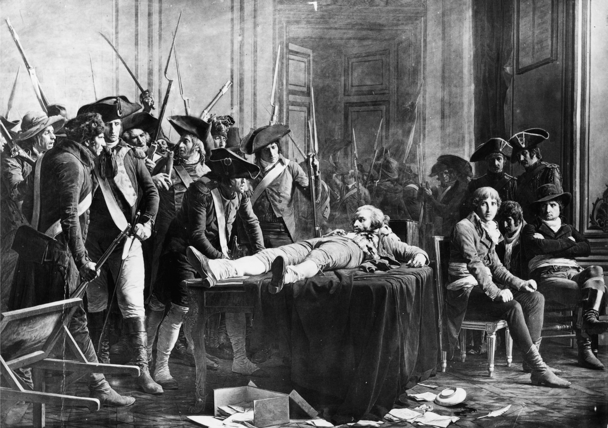
À medida que o governo jacobino se desgastava com a repressão, o medo e a
concentração de poder, crescia também, dentro da própria revolução, o desejo de
encerrar a fase mais radical do processo. A queda de Robespierre, em julho de
1794, não significou o fim da Revolução Francesa, mas marcou o esgotamento de
um período em que a república havia sido defendida por meio de medidas de
exceção, forte mobilização popular e violência política intensa. A partir dali,
a França entrou em uma nova etapa, em que os grupos mais ligados à alta
burguesia procuraram estabilizar o país, conter a participação popular e
garantir uma ordem mais favorável aos interesses da propriedade e dos setores
economicamente dominantes.
Esse movimento ficou conhecido como Reação Termidoriana. Ele não buscava
restaurar o Antigo Regime tal como existia antes de 1789, mas sim afastar a
revolução de sua fase mais democrática e popular, neutralizando os jacobinos,
enfraquecendo os sans-culottes e desmontando os mecanismos que haviam permitido
maior pressão das camadas populares sobre o governo. Os clubes jacobinos foram
fechados, antigos radicais foram perseguidos, e a política revolucionária
passava a se afastar das ruas para se concentrar de novo nas mãos dos setores
mais moderados e proprietários. O que se buscava agora não era aprofundar a
igualdade social, mas consolidar uma ordem estável depois dos anos de guerra
civil, crise econômica e Terror.
Em 1795, esse novo momento ganhou forma mais definida com a Constituição do Ano
III, que criou o regime do Diretório. A nova estrutura política tentou evitar
tanto o retorno da monarquia quanto a repetição da radicalização jacobina. O
poder executivo passou a ser exercido por cinco diretores, enquanto o
legislativo foi dividido em duas câmaras, numa tentativa de impedir a
concentração de poder que havia marcado o período anterior. Na aparência,
tratava-se de um sistema mais equilibrado e racional. Na prática, porém, ele
expressava uma escolha política bem clara: limitar a participação popular e
colocar a revolução sob um controle mais restrito.
._Déclaration_des_Droits_et_des_Devoirs_de_l'Homme_et_du_Citoyen.jpg)
Essa nova fase representou uma inflexão importante no processo revolucionário.
Se o período jacobino havia tentado, mesmo com todas as suas contradições,
responder à pressão das massas urbanas com controle de preços e mobilização
política, o Diretório caminhou em outra direção. A liberdade econômica voltou a
ganhar força, os controles sobre os preços foram enfraquecidos ou abandonados,
e os setores populares voltaram a sentir de maneira mais dura os efeitos da
carestia, da inflação e da instabilidade econômica. Assim, a mesma revolução que
havia derrubado privilégios feudais e proclamado a igualdade perante a lei agora
se reorganizava de modo a afastar o povo das decisões mais importantes e proteger
com mais clareza os interesses dos proprietários.
Ao mesmo tempo, o Diretório viveu cercado por ameaças de todos os lados. De um
lado, havia o medo de retorno monarquista, pois os defensores da velha ordem
continuavam ativos e buscavam aproveitar o desgaste revolucionário para
restaurar a monarquia. De outro, havia o temor de uma nova radicalização popular,
já que a pobreza e a desigualdade continuavam alimentando a insatisfação social.
O governo se via, portanto, entre dois perigos: a restauração do passado e a
retomada de uma revolução mais profunda. Para sobreviver, o Diretório precisou
recorrer cada vez mais à repressão política, à manipulação eleitoral e, sobretudo,
ao apoio do exército.
É justamente nesse ponto que o Diretório revela uma de suas maiores fraquezas.
Embora tenha sido criado com o discurso de estabilizar a França e encerrar os
excessos do Terror, ele nunca conseguiu construir uma base de legitimidade
sólida. Era um regime frágil, desconfiado e dependente da força. Quando
eleições produziam resultados indesejados, o governo recorria a golpes e
anulações. Quando a oposição crescia, respondia com perseguições e prisões.
Assim, a promessa de uma ordem política mais moderada e equilibrada convivia
com práticas autoritárias, mostrando que a revolução ainda estava longe de
alcançar uma estabilidade real. O Diretório não era o retorno ao absolutismo,
mas também não era uma república amplamente democrática: era uma forma de
governo marcada pelo controle burguês, pela exclusão popular e pela
insegurança permanente.
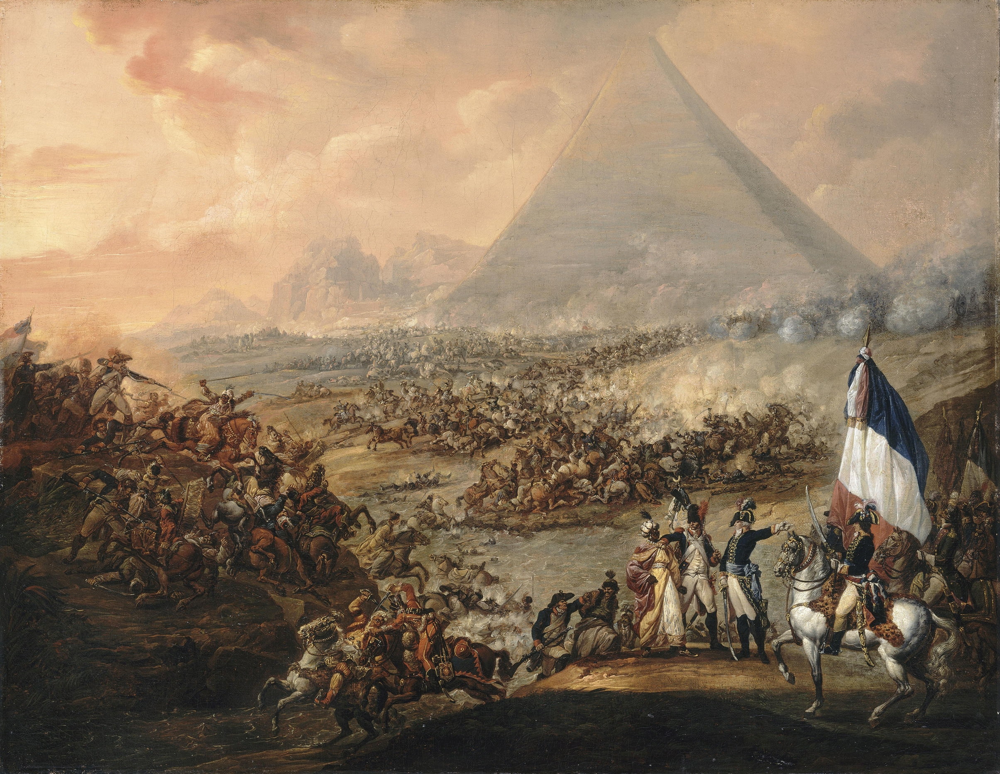
Nesse cenário, as guerras externas ganharam ainda mais importância. A França
continuava em conflito com outras potências europeias, e as vitórias militares
se tornaram fundamentais para a sobrevivência do regime. Elas ajudavam a
alimentar o prestígio nacional, forneciam recursos e desviavam parte das
tensões internas. Foi nesse contexto que começou a crescer a figura de Napoleão
Bonaparte. Suas campanhas militares o transformaram em herói para muitos
franceses e fizeram dele um nome cada vez mais influente dentro da vida
política do país. Aos poucos, o exército deixava de ser apenas instrumento de
defesa da revolução e passava a se tornar também um fator decisivo na disputa
pelo poder.
Além disso, o Diretório ficou marcado por corrupção, oportunismo e grande
instabilidade administrativa. Muitos viam o regime como incapaz de resolver os
principais problemas da França. Para os monarquistas, ele era ilegítimo porque
mantinha os resultados da revolução. Para os populares, ele era insuficiente
porque não respondia às necessidades sociais mais urgentes. Para parte da
própria burguesia, ele se tornava cada vez mais inconveniente, já que não
conseguia garantir nem ordem duradoura, nem autoridade forte o bastante para
consolidar as conquistas obtidas desde 1789. O regime parecia sobreviver sem
entusiasmo, apoiado mais no cansaço da população e na força militar do que em
verdadeira adesão política.
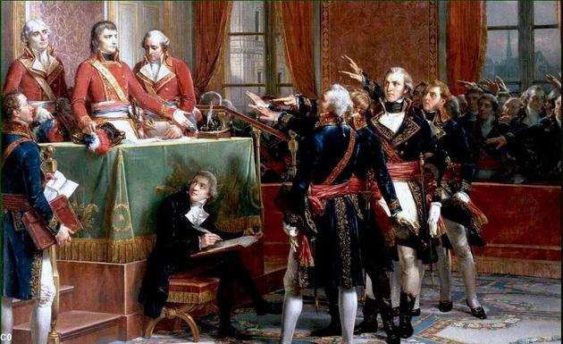
Foi nesse ambiente de desgaste que amadureceu a solução bonapartista. Em 1799,
Napoleão Bonaparte deu o Golpe de 18 de Brumário, derrubando o Diretório e
instaurando o Consulado. Com isso, encerrava-se mais uma fase da Revolução
Francesa. O golpe não destruiu tudo o que havia sido construído desde 1789.
Pelo contrário: preservou várias conquistas centrais da revolução, como o fim
dos privilégios feudais, a nova ordem jurídica e o fortalecimento da
propriedade burguesa. Mas fez isso ao custo de concentrar o poder nas mãos de
uma liderança forte, pondo fim à instabilidade política que havia marcado os
anos anteriores.
O Diretório, portanto, foi o momento em que a Revolução Francesa procurou se
conservar sem continuar se aprofundando. Depois da explosão popular, da
radicalização jacobina e do Terror, a alta burguesia tentou reorganizar a
república de forma mais segura para seus interesses, esvaziando a força das
massas e reforçando a defesa da propriedade e da ordem. No entanto, essa
tentativa de equilíbrio produziu um governo fraco, instável e dependente da
repressão e do exército. Por isso, o Diretório ocupa um lugar central na
história da revolução: ele mostra como, depois de derrubar o velho mundo, a
nova sociedade burguesa ainda precisou encontrar uma forma de se estabilizar
politicamente — e como, no caminho, abriu espaço para a ascensão de Napoleão.
Golpe de 18 de Brumário: a revolução chega ao seu limite
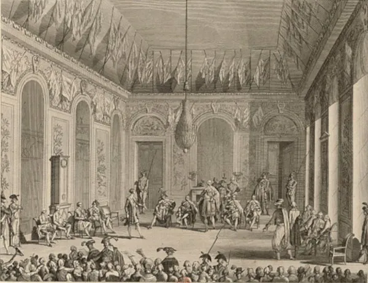
Foi nesse ambiente de desgaste, insegurança e perda de legitimidade que o Diretório
começou a se aproximar do seu fim. O regime já não conseguia responder de forma
estável às tensões que atravessavam a França desde os primeiros anos da revolução.
A alta burguesia, que havia retomado o controle político após a queda dos jacobinos,
conseguira frear a radicalização popular e proteger a propriedade, mas não fora
capaz de construir um governo sólido, respeitado e duradouro. O país continuava
marcado por crise econômica, corrupção, disputas entre facções, medo de restauração
monárquica e desconfiança diante de qualquer nova mobilização das camadas populares.
A revolução havia derrubado a velha ordem, mas a nova sociedade que surgia ainda
não encontrara uma forma política estável de se organizar.
Nesse contexto, o exército passou a ganhar um peso cada vez maior. As guerras
externas não serviam apenas para enfrentar as monarquias europeias que combatiam a
França revolucionária, mas também ajudavam a sustentar internamente um regime que
já não tinha apoio consistente. As vitórias militares traziam prestígio, reforçavam
o orgulho nacional e ofereciam uma aparência de força a um governo frágil. Foi nesse
cenário que Napoleão Bonaparte cresceu como figura política. Mais do que um general
bem-sucedido, ele passou a representar a possibilidade de impor ordem onde o Diretório
via apenas instabilidade, de garantir autoridade onde o governo parecia hesitante e
de conservar os resultados da revolução sem permitir que ela voltasse a escapar do
controle dos grupos proprietários.
.jpg)
A ascensão de Napoleão não deve ser entendida como simples obra de talento individual
ou ambição pessoal, embora essas características também tenham tido seu peso. Sua
chegada ao centro do poder só foi possível porque respondia a uma necessidade
concreta daquele momento histórico. Parte importante da burguesia já não queria o
retorno da monarquia absolutista e dos privilégios feudais, mas também não aceitava
o risco de uma nova radicalização popular. O que esses setores buscavam era um
governo forte o suficiente para encerrar a instabilidade, proteger a nova ordem
social e garantir, de uma vez por todas, as conquistas que lhes interessavam desde
o início da revolução: o fim do velho sistema aristocrático, a consolidação da
propriedade privada e a criação de um Estado capaz de defender essa nova
organização da sociedade.
Foi desse impasse que nasceu o Golpe de 18 de Brumário, em 1799. O nome vem do
calendário revolucionário francês e corresponde ao 9 de novembro daquele ano.
Aproveitando o enfraquecimento do Diretório e contando com o apoio de setores
influentes da política e do exército, Napoleão participou da derrubada do regime e
da criação de uma nova estrutura de poder, o Consulado. Na aparência, tratava-se de
uma reorganização institucional para salvar a república da desordem. Na prática, o
golpe concentrou o poder de maneira decisiva nas mãos de Napoleão, que rapidamente
se tornou a figura central do novo governo.
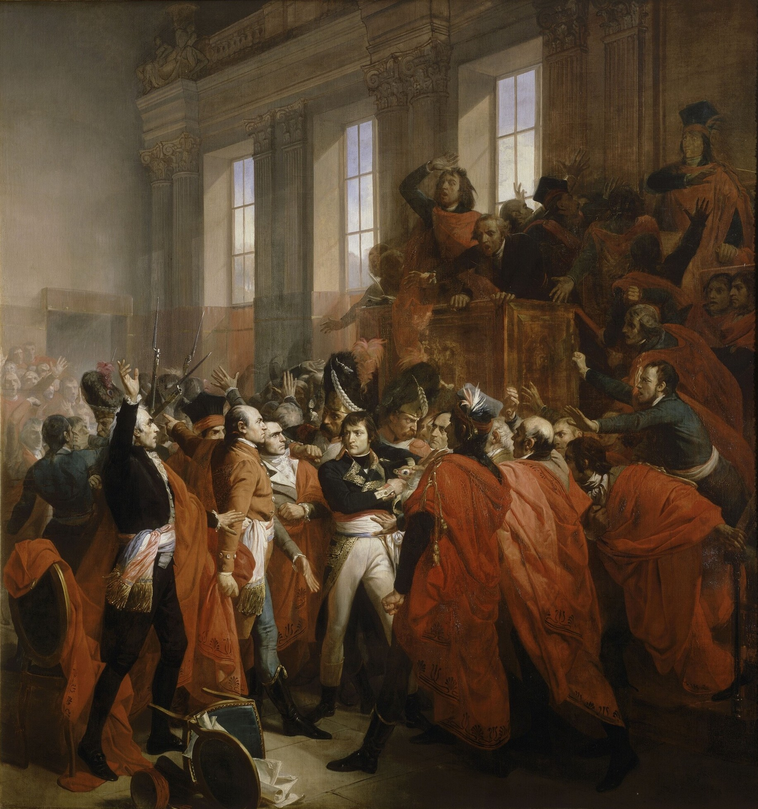
O sentido histórico do golpe está justamente nisso: ele não representou uma
destruição completa da Revolução Francesa, mas também não foi sua continuidade
democrática. O que aconteceu em Brumário foi a transformação da revolução em
ordem. Depois de anos de ruptura, conflito, mobilização popular, guerra civil,
repressão e disputa entre diferentes projetos de sociedade, a nova classe
dominante encontrou uma forma mais firme de estabilizar seu poder. O que havia
sido conquistado contra o Antigo Regime foi em grande parte preservado: os
privilégios feudais não voltaram, a nobreza não retomou seu antigo lugar, e a
burguesia manteve sua posição central na nova estrutura social e política. Mas
tudo isso passou a ser garantido por um governo mais centralizado, mais
autoritário e cada vez mais apoiado na força militar.
Assim, o Golpe de 18 de Brumário pode ser visto como o ponto em que a revolução
chega ao seu limite. O impulso popular que ajudou a derrubar a Bastilha, pressionou
as ruas de Paris, sustentou a radicalização republicana e levou a revolução adiante
já não tinha mais espaço para continuar conduzindo o processo. A nova ordem
precisava de estabilidade, e essa estabilidade passou a ser construída não pela
ampliação da participação popular, mas pela concentração do poder. A revolução, que
começara atacando os privilégios de nascimento e proclamando a soberania da nação,
terminava abrindo caminho para um governo forte, pessoal e centralizador.
Por isso, 18 de Brumário não deve ser visto apenas como o golpe que derrubou o
Diretório. Ele foi o momento em que a Revolução Francesa se encerrou como processo
aberto de transformação e deu lugar a uma nova fase, em que suas conquistas
principais seriam mantidas, mas reorganizadas sob a autoridade de Napoleão
Bonaparte. O velho mundo já havia sido destruído, mas o novo não se resolveu numa
república popular e ampla. Ele se consolidou sob a forma de um Estado burguês
forte, capaz de impor ordem depois de uma década de abalos profundos.